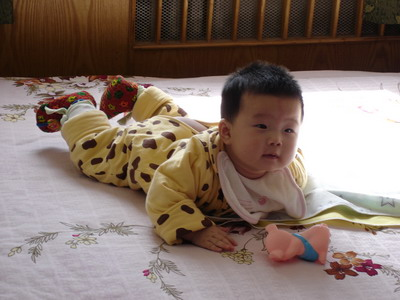

曼曼喜欢用手摸妈妈的脸，还喜欢把手塞到妈妈嘴里，但是没轻没重，一个没留神就用小爪子挠别人一下。
曼曼这个月会自己翻身了，躺在床上时会突然把双脚高高翘起，然后整个身子倒向左侧，接着灵巧的翻过来。她现在爱上了翻身的动作，只要平躺着就开始练习，什么时候看她都是趴在床上。后来她终于学会了自己从趴着再翻回躺着的姿势。

躺在小车里的时候，曼曼会把两只脚高高抬起，然后用手抓住自己的小鞋。她穿着要系带子的毛线鞋，每次都会自己把带子拽开。
曼曼一天到晚喜欢在大人腿上蹦，喜欢“呜呜哇哇”说个不停，别人一逗她就乐，十分可爱。
满六个月体检，曼曼体重8.8公斤，身长68厘米。